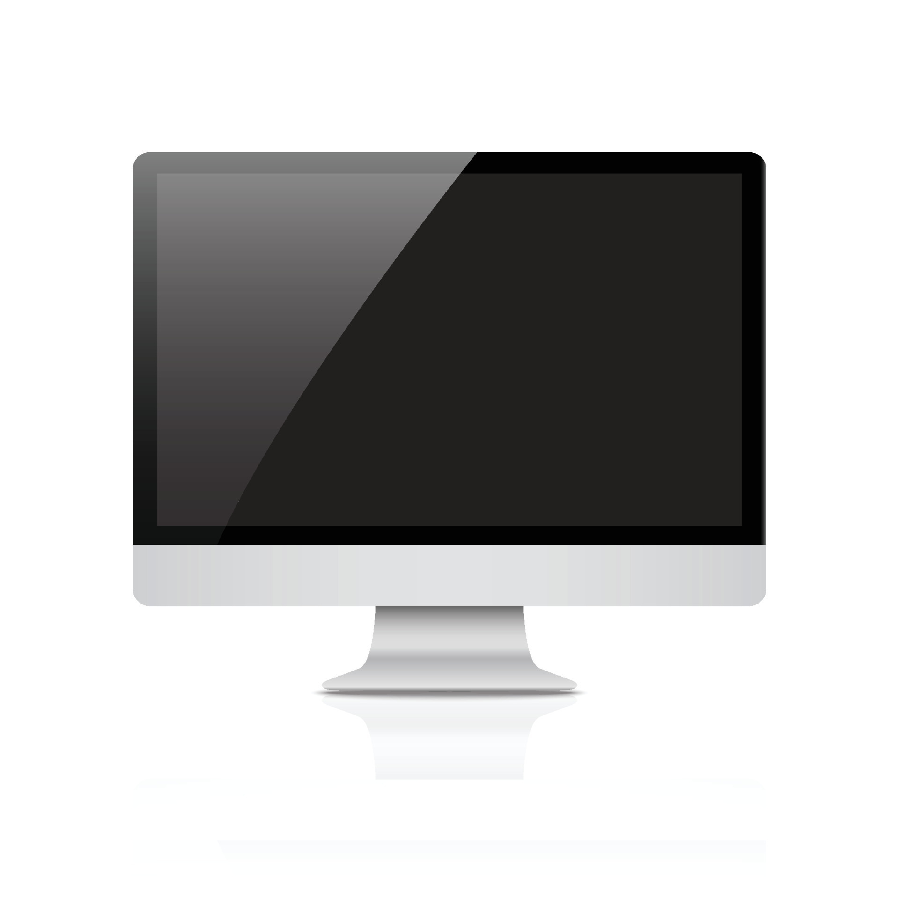
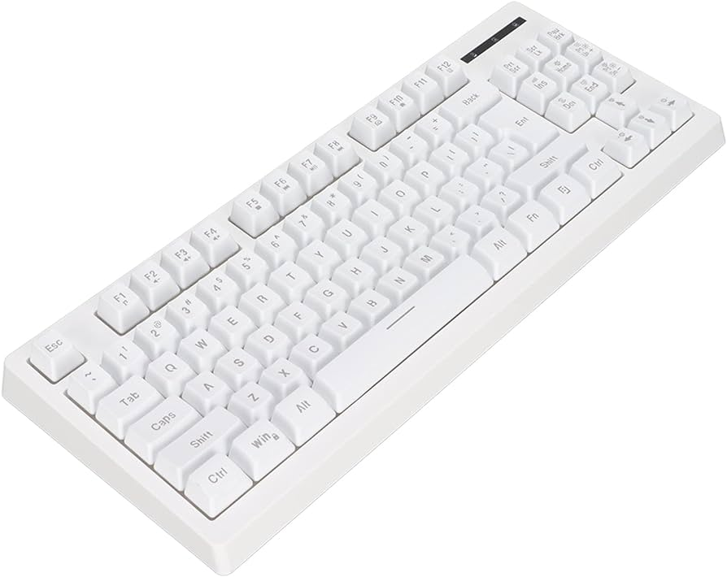
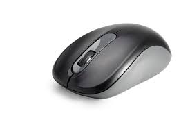
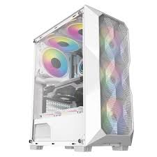
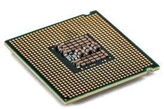
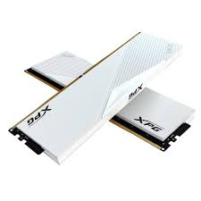
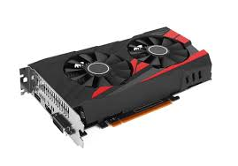
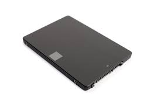

Veja abaixo como é seu computador por dentro:
O que é Monitor?
Um monitor é como a tela de um computador, mas separado fisicamente. Ele mostra as imagens e vídeos que você vê
no computador ou em outros dispositivos eletrônicos, como seu smartphone ou tablet. É um item muito importante na nossa
vida digital e pode ser encontrado em muitos lugares diferentes, como em casa, no trabalho ou na escola.

O que é Teclado?
O teclado é uma das principais ferramentas que usamos para interagir e introduzir dados no computador. A maioria dos teclados
contam com pelo menos 5 grupos de teclas que são:
Teclado numérico, teclas de digitação ou teclado alfanumérico, teclas de navegação e teclas especiais, teclas de Controle e teclas de Função.

O que é Mouse?
Mouse é uma palavra do inglês, que traduzido para o português significa Rato. Este é um termo muito utilizado para definir um componente
de hardware muito importante para o computador, utilizado para posicionar o cursor (uma seta geralmente) na tela do computador. O mouse tem
uma história muito peculiar, pois foi tido como uma invenção medíocre e sem futuro, sendo atualmente um componente muito importante para trabalhar,
jogar e utilizar as mais variadas funções dos computadores, sendo em alguns casos indispensável.

O que é Gabinete / Cpu?
Um gabinete de computador, também conhecido como case, caixa, chassis ou carcaça, é o compartimento que contém a maioria
dos componentes de um computador. O gabinete pode ser de 2 modelos, de acordo com a sua
posição. Torre, são os que ficam na posição vertical e mesa, os que ficam nahorizontal. A função do Gabinete é proteger os componentes de sujeira e
umidade, e também evitar superaquecimento dos componentes.

O que é Processador?
Um processador é uma espécie de microchip especializado. A sua função é acelerar, endereçar, resolver ou preparar dados, dependendo da aplicação.
Basicamente, um processador é uma poderosa máquina de calcular. O componente recebe um determinado volume de dados, orientados em padrão binário 0 e 1
e tem a função de responder a esse volume, processando a informação com base em instruções armazenadas em sua memória interna.

O que é Memoria RAM?
A memória RAM — Memória de Acesso Aleatório ou ( Random Access Memory ), em inglês, permite a leitura e a escrita de arquivos. Ou seja,
a sua função é possibilitar que o processador tenha acesso imediato aos dados que deseja, contribuindo para uma maior
rapidez e capacidade de resposta das solicitações

O que é Placa de Video?
A placa de vídeo é uma das partes mais essenciais de um PC ou notebook porque é a responsável por realizar a conexão entre os componentes
do computador em si e o monitor, sendo responsável por tudo que é exibido na tela para o usuário.
Ela é também uma peça essencial para PC gamers, por ser a responsável pelos gráficos dos jogos, e para PCs de trabalho que
usem softwares pesados visualmente, como o Autocad.
